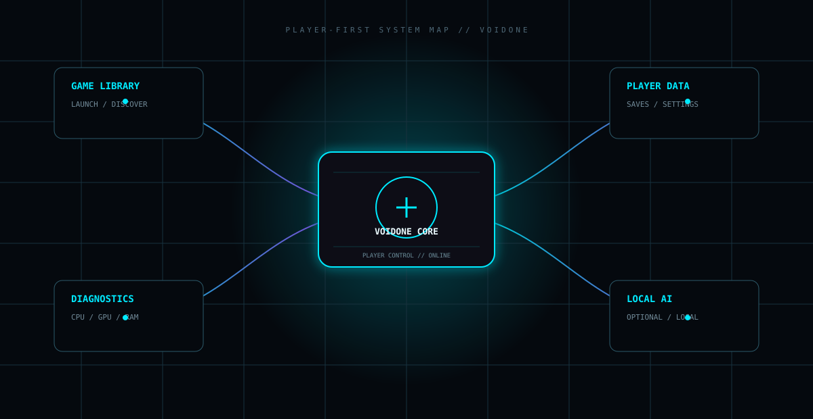

متنباز · بومی · برای PC
بازیهای تو.
سختافزار تو.
قوانین تو.
VoidOne یک پلتفرم بومی و متنباز برای بازیهای رایانهای است؛ ساختهشده از سمت بازیکن، برای بازیهایی که همین حالا داری و دادهای که باید تحت کنترل خودت بماند.
VOIDONE / PLAYER SYSTEMLOCAL-FIRST
COREC++23UIQt / QMLDATALOCAL
۰۱ / دنیای بازیکنفروشگاه نیست.
فروشگاه نیست.
اتاق کنترل است.
بازیها، دادهها، Diagnostics و هوش مصنوعی اختیاری در یک لایه حول خود بازیکن قرار میگیرند.

PLAYER // CONTROL۰۲ / پلتفرمنرمافزار بومی.
نرمافزار بومی.
مرزهای شفاف.
هسته برنامه، رابط کاربری و دادههای محلی از هم تفکیک شدهاند تا VoidOne قابل فهم و قابل بررسی بماند.
C++23
هسته بومی برنامه.
←
Qt / QML
رابط کاربری مدرن دسکتاپ.
←
SQLite
ذخیرهسازی محلی.
۰۳ / امکاناتچیزهای مفید.
چیزهای مفید.
بدون شلوغی.
تمرکز روی کارهایی که یک گیمر PC واقعاً اطراف کتابخانه بازیاش نیاز دارد.
کتابخانه بازی
بازیهای موجود روی سیستم را مدیریت و اجرا کن.
Steam Discovery
بازیها و مسیر اجرایی نصبشده را پیدا کن.
پشتیبان ذخیرهها
از دادههای مهم Save بهصورت محلی نسخه پشتیبان بگیر.
Diagnostics
برای فهمیدن دلیل مشکل، لاگ و ابزار تشخیصی داشته باش.
Localization
پشتیبانی از رابطهای چندزبانه و RTL.
Release Engineering
ساخت، تست و بستهبندی خودکار.
۰۴ / تکاملدر فضای باز ساخته میشود.
در فضای باز ساخته میشود.
قدمبهقدم.
تاریخچه پروژه عمومی است؛ چون خود محصول هم باید قابل فهم باشد.
GENESIS
شروع VoidOne
تاریخچه عمومی پروژه از اینجا شروع میشود.
ENGINEERING
شکلگیری پلتفرم بومی
رابط کاربری، CI/CD، Diagnostics و بستهبندی جدیتر میشوند.
OPEN DEVELOPMENT
ساخت، بررسی، بهبود
وضعیت پروژه بر اساس مخزن و Releaseهای واقعی تعیین میشود.
۰۵ / توسعهدهندگان
درِ موتورخانه باز است.
کد، معماری، ساخت، امنیت و مشارکت عمومی هستند.
۰۶ / FAQساده و مستقیم.
ساده و مستقیم.
بدون تبلیغ.
VoidOne چیست؟
یک پلتفرم بومی و متنباز برای مدیریت و کار با بازیهایی که از قبل داری.
فروشگاه بازی است؟
نه. VoidOne عمداً Library-first و Player-first است، نه یک Storefront.
از Cloud استفاده میکند؟
معماری پروژه Local-first است و وابستگی غیرضروری به Cloud هدف آن نیست.
پلتفرم بازی باید
خدمتگزار بازیکن باشد.
ساختهشده توسط یک گیمر. در فضای باز. برای اینکه مال خودت بماند.